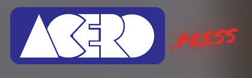
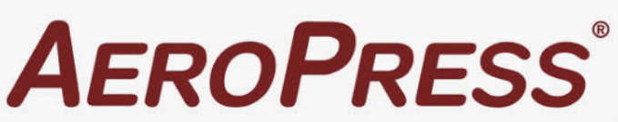
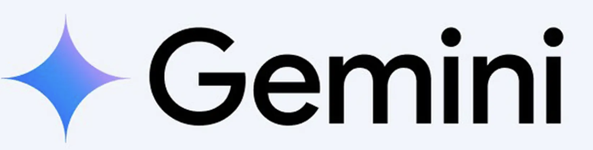
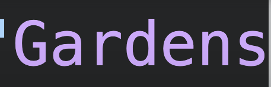
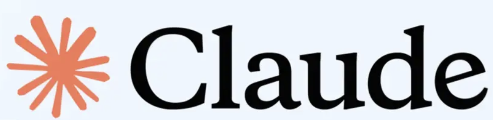

Sube una foto real
Desde la cámara o la galería. Interior o fachada, tal como está hoy — sin planos, sin medidas, sin renders previos.
Sigues nuestras publicaciones en AeroPress.
IA, datos y diseño al servicio de cada café de especialidad.
Del espacio físico a la presencia digital, del tueste al campo.
IA que analiza tu espacio, detecta zonas muertas y propone una nueva distribución. Del diagnóstico a la propuesta en 72 horas.
acero.studio convierte una foto real de tu espacio en una propuesta de rediseño en minutos, y te conecta directo con un asesor para llevarla a obra.
Desde la cámara o la galería. Interior o fachada, tal como está hoy — sin planos, sin medidas, sin renders previos.
Minimalista, industrial, cálido, escandinavo, tropical — o describe el tuyo. Cada opción ajusta materiales, color y luz.
Mantenemos la estructura real del local — paredes, ventanas, columnas — y solo transformamos acabados, mobiliario y estilo.
Con la propuesta lista, hablas directo con un asesor de acero.studio para llevarla a obra: materiales, tiempos y presupuesto.
Pruébalo ahora en el panel de la derecha →Pruébalo ahora ↓
Convierte una foto real de tu cafetería en una propuesta de rediseño en minutos.
Cámara o galería, tal como está hoy.
Minimalista, industrial, cálido, escandinavo…
Misma estructura del local, nuevo estilo.
Habla directo con un asesor real.





Infraestructura visual e inteligencia espacial para cadenas comerciales, firmas de arquitectura y desarrolladores que buscan acelerar la conversión de sus proyectos.
Arquitectura, diseño de interiores y rediseño con inteligencia artificial aplicados al café de especialidad — pensado y escrito desde Bogotá.